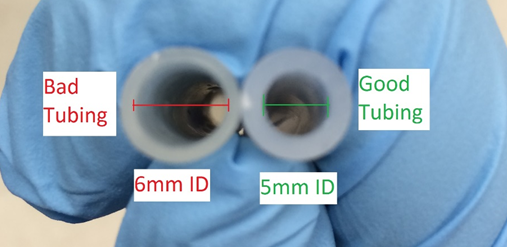
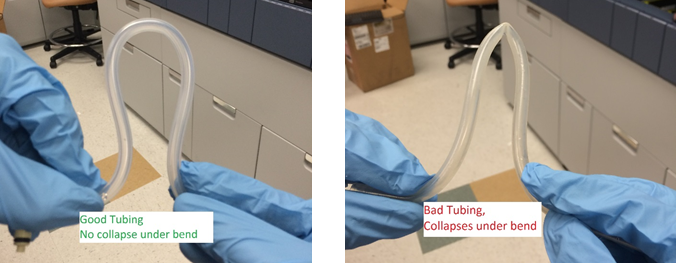
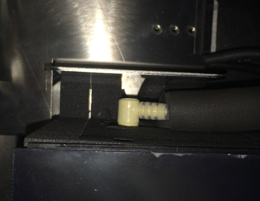
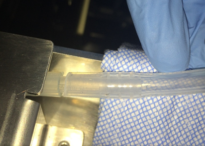
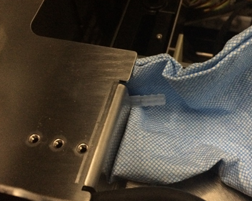
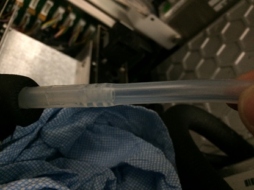
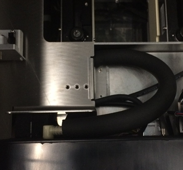
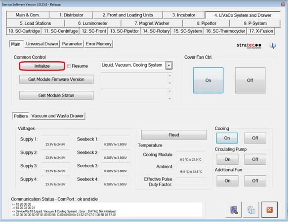
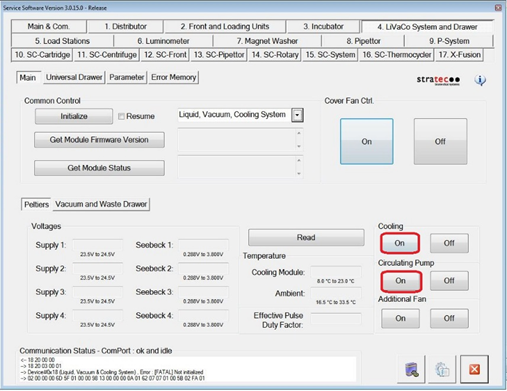
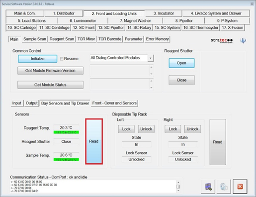

Reagent Bay Cooling Line Extension Tubing Replacement Procedure
Purpose
Instructions to replace the Panther Fusion Reagent Bay cooling line extension tubing.
Applicable for Fusion Modules below Serial Number 2101000082.


Parts and Materials Required
- Absorbent bench pads
- 5 mm inner/8 mm outer diameter silicon tubing
- Proper PPE
- Tubing cutter
Time Required
- 5 minutes for Procedure
- 5 minutes for Verification
Procedure
- Put on proper PPE.
- Power down the Fusion module.
- Power down the PC.
- Lift the left Panther canopy door.
 Disconnect the cooling fluid line quick-connect fitting on the rear of the Reagent Bay.
Disconnect the cooling fluid line quick-connect fitting on the rear of the Reagent Bay.

- Disconnect the male fitting by pushing on the spring loaded metal tab on the female fitting.
- Tracing the fluid line back to the Fusion barbed fitting interconnect, place an absorbent blue pad underneath this interconnect.(It should be near a break in the cooling line insulating foam.)

- Remove the Reagent Bay cooling line tubing from the barbed interconnect fitting. (If the incorrect tubing is installed on the system this should not require much force to remove.)

- Remove the cooling fluid line insulating foam (the foam that surrounds the tubing).

Note—Do not discard this foam, you will place it back onto the system. - Remove the male quick-connect barbed fitting from the removed tubing by force or with a tubing cutter.
- Install the quick disconnect into the 5 mm ID silicon tubing. Verify all barbs on the barbed fitting are contained within the tubing.
- Replace the insulating foam back onto the replaced tubing.
- Replace the other end of the silicon tubing back onto the barbed interconnect fitting. Verify all barbs on the barbed interconnect fitting are contained within the tubing.

- Reconnect the male quick-connect fitting back into the female quick-connect tubing on the rear of the Reagent Bay.

Verification
- Power on the Fusion Module.
- Power on the PC.
- Log-in to the FSE Shield.
- Start Service Software.
- Under the 4. LiVaCo System and Drawer tab, Initialize the Liquid Vacuum and Cooling Module.

- Under both Cooling and Circulating Pump, click On.

- After 5 minutes, verify that Reagent and Sample Bay temperatures come into acceptable ranges (15.5°C - 22.5°C).

- Verify that there is no fluid present behind the Reagent Bay, especially around the barbed interconnect and quick disconnect fittings.
- Remove any disposable absorbent material used in this procedure from the system.
- Verification is complete.
 button at the top of the page to send feedback, comments, or change requests.
button at the top of the page to send feedback, comments, or change requests.